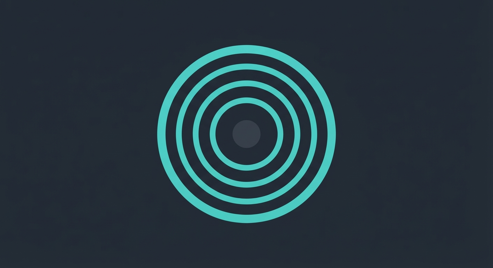
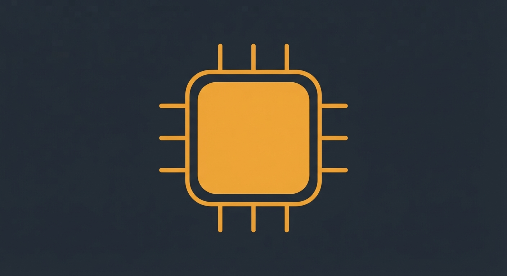
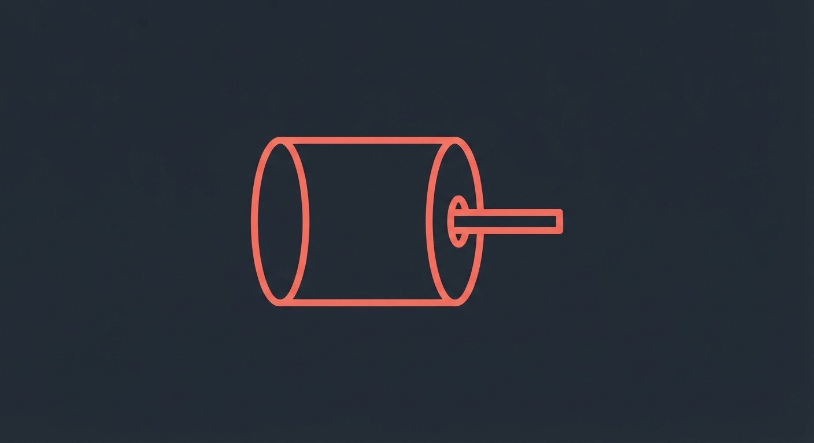
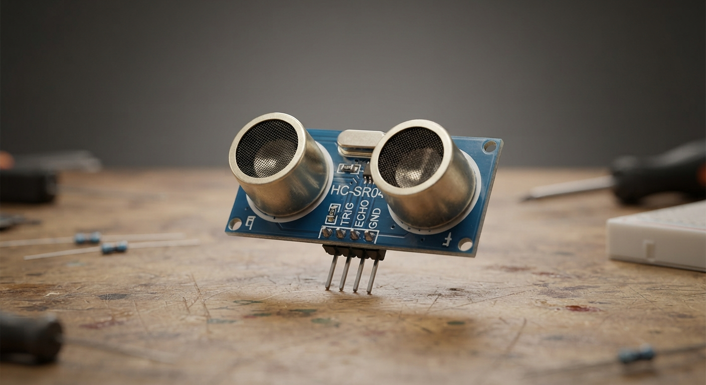
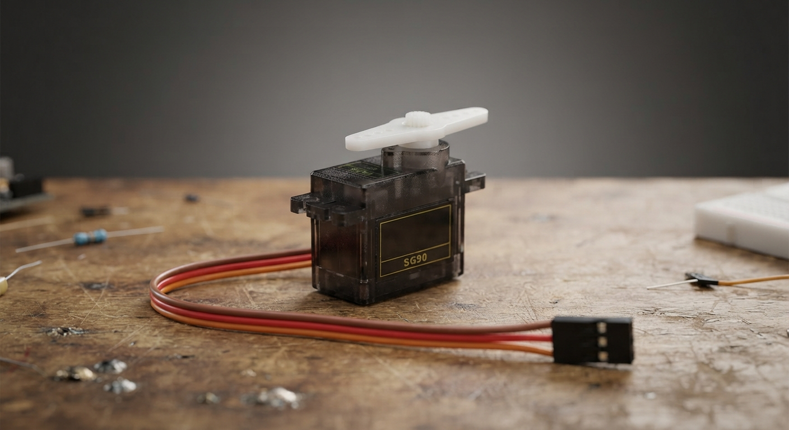

El robot R-07 dejó de responder en medio de una prueba. Tu misión, como técnico/a de campo, es revisar sus tres sistemas, percepción, decisión y acción, para encontrar qué falló.
Conectando con R-07...
[AVISO] El robot no reacciona a estímulos. Diagnóstico requerido.
Cargando expediente técnico de sus tres sistemas...
Listo, agente. Empezá por entender cómo funciona cada parte.
Objetivo: al terminar esta misión, vas a poder identificar sensores, actuadores y el controlador de un robot, y explicar cómo se relacionan entre sí para resolver una falla.

Sensor

Controlador

Actuador
01, EXPEDIENTE TÉCNICO
Los tres sistemas de R-07
Un robot es una máquina. Puede sentir lo que pasa a su alrededor, puede moverse o hacer una acción, y tiene un programa que le dice qué hacer. Revisá cada sistema a continuación.
Sistema de percepción: los sensores
Un sensor es una pieza que capta información. El sensor mide algo del ambiente. Por ejemplo: la luz, la distancia o el color.
Sensor de distancia. Mide qué tan cerca está un objeto.
Sensor de luz. Mide si hay luz o sombra.
Sensor de color. Reconoce colores como negro o blanco.

Sensor ultrasónico usado en el Laboratorio
Sistema de acción: los actuadores
Un actuador es una pieza que produce un movimiento o una acción. El actuador recibe una orden. El actuador cumple esa orden.
Motor. Hace que el robot se mueva.
Led. Enciende una luz.
Parlante. Emite un sonido.

Motor DC / servomotor usado en el Laboratorio
Sistema de decisión: el controlador
El controlador es el cerebro del robot. Recibe la información de los sensores, decide qué hacer y manda la orden a los actuadores.
El controlador tiene un programa. El programa dice, paso a paso, qué debe hacer el robot en cada situación.
Reconstrucción: los tres trabajan juntos
El sensor capta información.
El controlador recibe esa información y decide.
El actuador ejecuta la acción.
Ejemplo: un sensor de distancia detecta un obstáculo. El controlador decide frenar. El motor (actuador) frena el robot.
Video: robot esquivando un obstáculo
02, PROTOCOLO DE DIAGNÓSTICO
Encontrá la falla
Completá los dos chequeos para cerrar el expediente
Chequeo 1 · Identificación
resultado:
Chequeo 2 · Núcleo de decisión
Resolvé el chequeo 1 para desbloquear este sector del expediente.
resultado:
R-07 operativo
Diagnosticaste los tres sistemas del robot y R-07 volvió a responder. Insignia de técnico/a de robótica desbloqueada.
CLAVE: NUCLEO-ESTABLE
Reportá esta clave a tu docente (por ejemplo en Schoology) como evidencia de que completaste el diagnóstico.